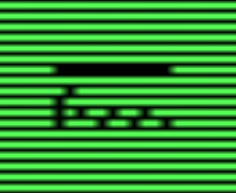

Jester-Knight
Literature
Film
Music
Visual Art
Tributes
Submissions
Links
Contact
Volodymyr Bilyk
Biography
Volodymyr Bilyk is a poet from Ukraine who writes in English. So he's basically from another dimension or Parts Unknown.
Long story short: he follows Ezra Pound's "Make It New" and considers Pink Dairies song "Do It" to be a quite adequate description of his artistic intentions
Click below for Volodymyr's work
Poems (.pdf)
SYMBOLS LINES NEW!!!
These pieces are made with scanlines filters: the original piece of writing was processed and turned into an abstraction.
